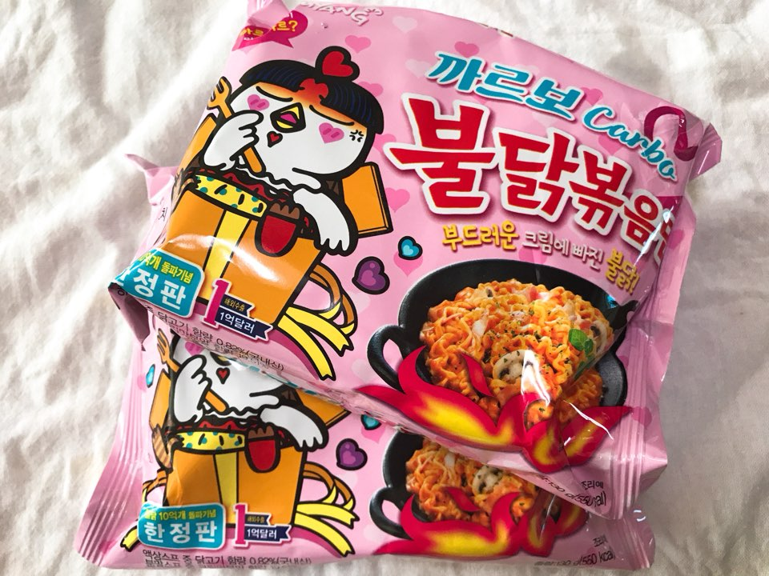

까르보 불닭볶음면

삼양식품이 한정판으로 선보인 까르보불닭볶음면이 출시 한 달 만에 1100만개 이상의 누적 판매량을 기록하며 인기몰이에 나서고 있다. 삼양식품은 예상밖 인기에 고무된 분위기다.
26일 삼양식품에 따르면, 까르보불닭볶음면은 지난해 12월 18일 봉지면에 이어 12월 26일에 용기면을 선보였는데, 각각 750만개(1월 17일 기준), 370만개(1월 25일 기준)가 판매됐다. 최근에는 일평균 판매량이 45만개로 늘어 1초에 5개꼴로 팔려나가고 있다. 이는 오뚜기 진짬뽕이나 농심 볶음너구리 등 업계 히트작들보다도 빠른 속도다.
현재 삼양식품은 까르보불닭볶음면 주문량을 감당하기 위해 기존 원주공장과 함께 익산공장에서도 생산하고 있으며 설비를 최대 가동하고 있다.
불닭브랜드 10억 개 판매를 기념해 한정판으로 출시한 ‘까르보불닭볶음면’은 매운맛 액상스프와 모짜렐라치즈분말, 크림맛분말 등이 함유된 분말스프를 통해 한국식 크림파스타의 맛을 재현해냈다는 평가를 받는다. 매운 정도도 불닭볶음면(4404 SHU)의 절반 수준으로 낮춰 누구나 쉽게 맛볼 수 있게 했다.
특별한 언론홍보없이 소셜네트워크서비스(SNS)상에서 입소문만으로 폭발적인 반응을 얻고 있다. 개인 블로그 시식 후기가 하루에 150여건이 넘고, 유명 유투버의 제품 리뷰도 이어지고 있다. 한정판에서 징식제품으로 판매를 요구하는 목소리도 커졌다.
특히 기존 불닭볶음면 등 매운 제품을 선호하지 않던 4050세대가 새로운 소비층으로 합류한 것이 주효했다. 까르보불닭볶음면은 1월 기준 불닭시리즈 중 판매량 1위를 기록했다.
삼양식품 관계자는 "제품의 성패는 결국 맛에서 결정되는데 국내 소비자들이 공통적으로 맛있다는 평가를 내리고 있다"며 "앞으로도 맛에 대한 꾸준한 연구 개발을 통해 전세대가 즐길 수 있는 불닭브랜드로 키워나갈 것"이라고 말했다.